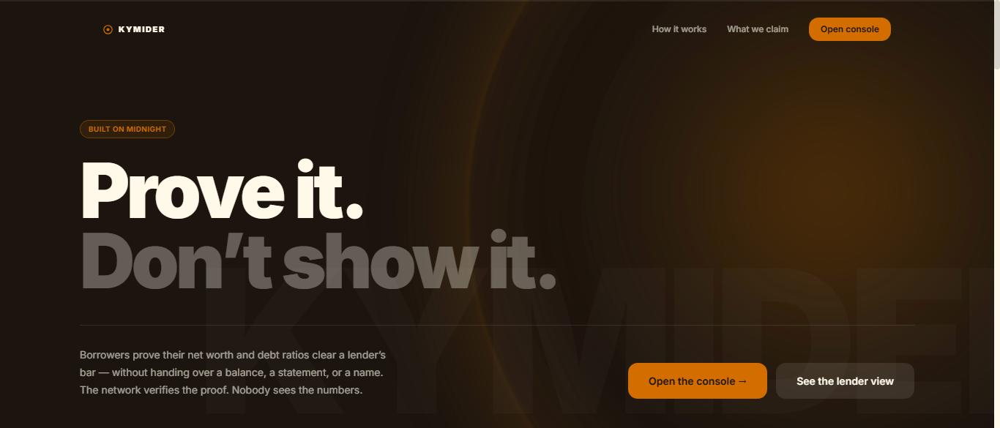
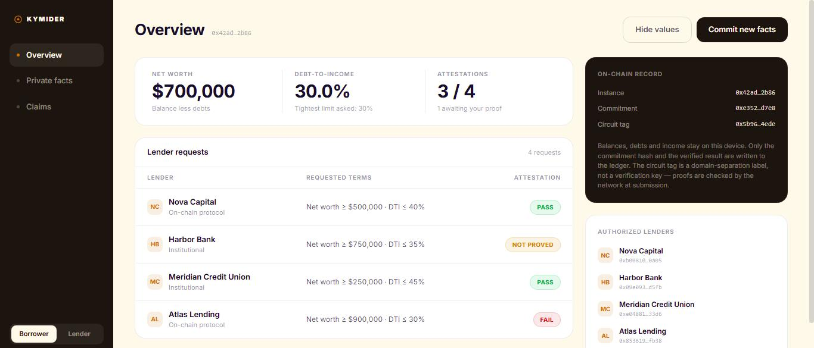
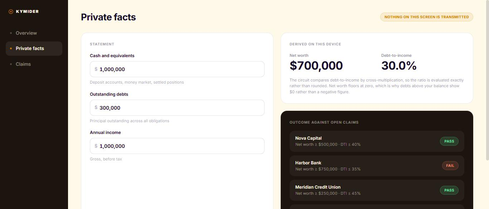
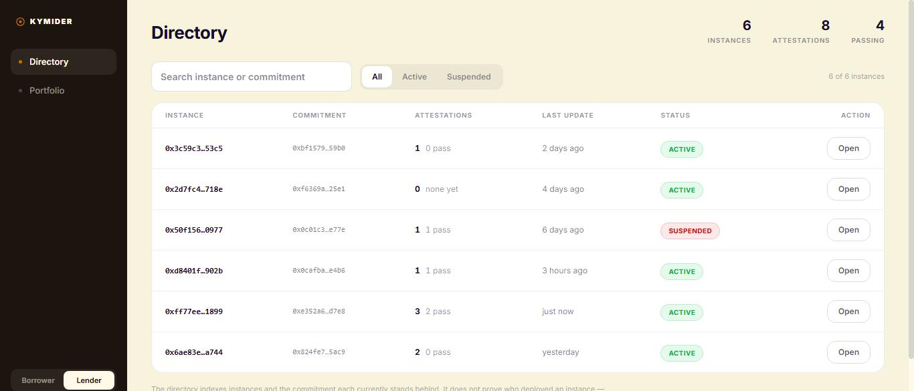
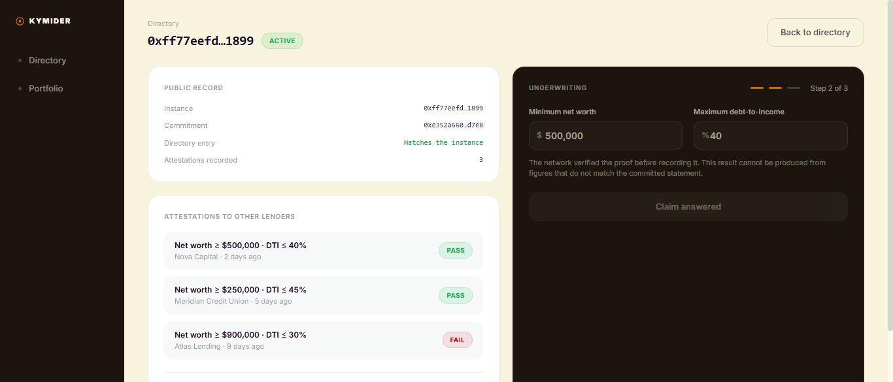

Midnight Buildathon · Wave 1 · Proof-of-Solvency MVP
Prove it. Don’t show it.
Privacy-first loan underwriting on Midnight. A borrower proves their net worth and debt ratios clear a lender’s bar without handing over a balance, a statement, or a name. The network verifies the proof. Nobody sees the numbers.
Live console
turnless.github.io/kymider
Repository
github.com/Turnless/kymider
Stack
Compact 0.23 · MidnightJS
The problem
The lender needs one bit of information: does this applicant clear our bar? They receive an entire financial history instead, then have to store it, secure it, and become a breach target for it.
The borrower
Over-discloses permanently, to answer one question once.
The lender
Inherits liability for data it never actually wanted.
The declined applicant
Surrendered everything, and got nothing back.
Screen 1 · the claim

Screen 2 · the borrower’s console

Screen 3 · where the figures live

The flow · four steps, two leave the device
updateFacts The borrower commits a statement. A hash goes on chain; the figures do not.requestClaim An authorized lender names terms: a net-worth floor and a maximum DTI.proveSolvency The proof is generated on the borrower’s own device, against the committed statement.approve / reject Midnight verifies the proof. The contract records a PASS/FAIL attestation.The circuit recomputes the commitment in-circuit from the private facts and asserts it matches what is on chain, so a proof built on figures the borrower has since changed cannot pass.
Architecture · Midnight’s dual ledger
Private state · per instance
SolvencyProof
Each borrower deploys their own instance. Actual figures live in that instance’s private state and never leave the device. On chain sits only a commitment.
Public ledger · shared
Registry
Deliberately public-only. It indexes instances and the commitment each currently stands behind, so lenders can discover borrowers and request claims. Nothing more.
Private state belongs to a single contract instance on Midnight. That constraint set the whole design rather than being worked around.
Screen 4 · what the lender can browse

Screen 5 · the verdict

Quality assurance
49
Offline contract tests
Drive the compiled contracts through simulators. No Docker, no proof server.
5
CI jobs
Compile contracts, typecheck, test, build and publish the console, and stand up a Docker devnet.
2
Wallets, real proofs
Devnet simulation against node, indexer and proof server, including the negative cases.
A lender cannot call a borrower-only circuit. A borrower cannot decide their own claim. A proof against a stale commitment fails. Compiled modules are committed back by CI when a .compact source changes, so the repository never describes contracts it no longer has.
Market and adoption
Wedge · DeFi lending
Lending is over-collateralised because a borrower cannot be assessed without identity and disclosure. Kymider supplies the missing primitive, so a protocol can offer a verified-solvency tier at lower collateral. A capital-efficiency argument, not a privacy nicety.
Second · regulated lenders
Credit unions and mortgage pre-qualification answer one question at volume by collecting everything. Under GDPR and Nigeria’s NDPR, minimisation is becoming obligation. You cannot leak what you never held.
The honest dependency
Provenance is a partnership problem, not a cryptography one: it needs an open-banking provider co-signing facts into private state.
Roadmap
Wave 2
Each loan becomes its own contract instance with an on-chain lifecycle: apply, underwrite, disburse, repay, indexed by a public LoanDirectory.
Wave 3
The same proof engine feeding a traditional-bank channel through signed, expirable off-chain attestations, plus KYC/AML hooks.
Beyond
Attested data provenance. Real wallet connection via Lace. Testnet deployment.
ZK proves computation, not honesty. The circuit guarantees the arithmetic was performed correctly on the committed figures. It cannot know whether those figures were true. That gap is stated plainly inside the product itself, and closing it needs attested data providers, not more cryptography.
Kymider · Wave 1
Try the console
turnless.github.io/kymider
Repository
github.com/Turnless/kymider
Licence
Apache-2.0